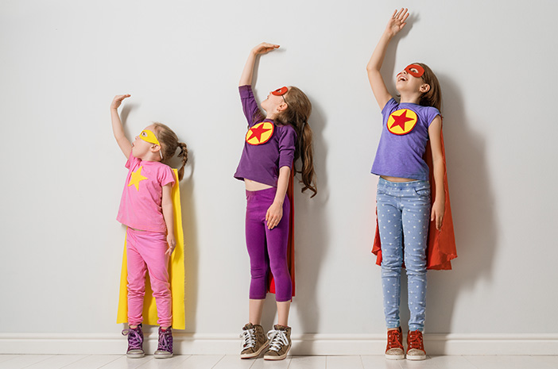

Manfaat Gizi Seimbang

Menambah Energi
Membantu tubuh tetap aktif dan bersemangat sepanjang hari.

Meningkatkan Kesehatan
Menjaga daya tahan tubuh dan mencegah penyakit.

Tumbuh Kembang Optimal
Mendukung pertumbuhan anak yang sehat dan cerdas.
Klik gambar untuk lebih detail